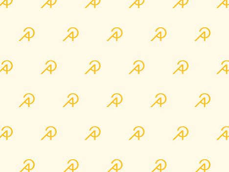

Inneffective Silhouttes - Birds still try to fly through blank spaces

Inneffective UV - Most birds can't see UV

Basic impersonal designs
Birds often crash into building windows as they can’t see through them. Many window decals aren't designed for bird collision prevention, aren't customizable, can be misleading and ineffective, and don't adhere to established safety standards.
At Safe Wings, we create custom window decals that can reduce bird collisions, promote company brand, and support local life.
Modern day design is also losing color, becoming bland and repetitive. While driving around Historic Grand Ave. in Phoenix, I witnessed the liveliness that bright colors and inspired artwork bring to a city.
I wondered if I could transform these murals to be beautiful and safe window decals for birds to reduce bird collisions, please the human eye, and bring this liveliness back to our community.


